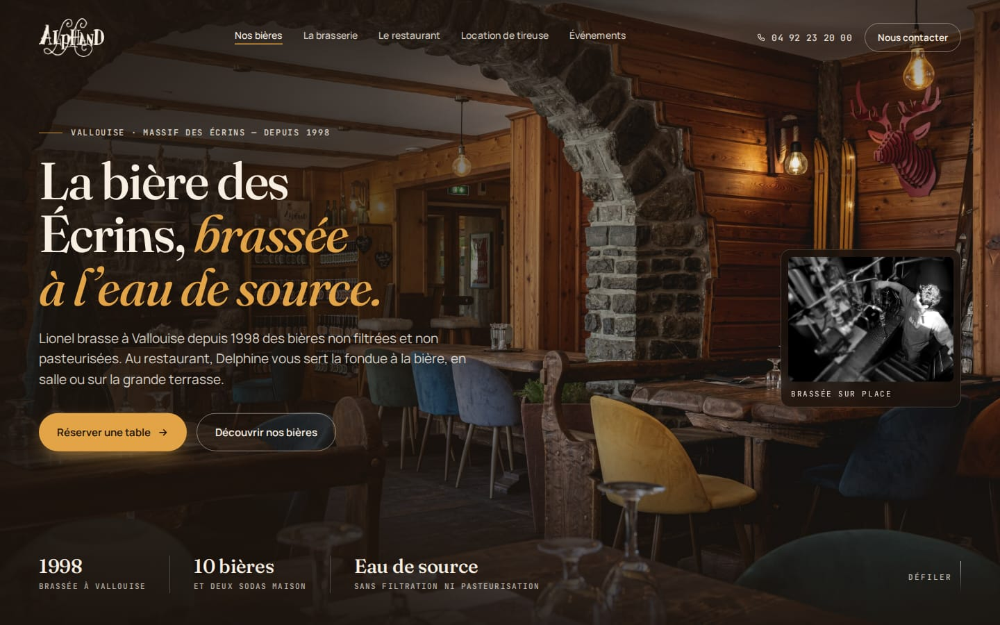
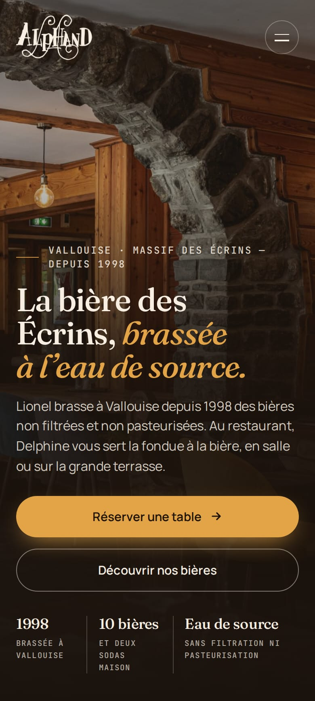

D994EVallouise
Brasserie Alphand
Micro-brasserie artisanale, bar et restaurant
- Panier
- Design Pas de SEO : ils veulent seulement un beau site
- Demander
- Lionel Alphand (brasserie) ou Delphine Alphand (restaurant) · brasserie depuis 1998 · restaurant (SAS Delys) depuis 2018
- Adresse
- Place du village, 05290 Vallouise (brasserie : 23 venelle du Poilu)
- Locaux
- Appeler avant Restaurant place du village, brasserie venelle du Poilu. Bar ouvert de mi-juin à mi-septembre, restaurant de fin juin à fin août : en octobre, appelle avant pour savoir qui est là.
- Téléphone
- 04 92 23 20 00
- Hors sujet : ils ne veulent pas de SEO. Ne parle que du design (et du piratage).
Ce que j’ai vu sur leur site
- Site piraté : deux scripts cachés sur l’accueil interrogent un contrat sur la blockchain Polygon pour obtenir une adresse, puis chargent un programme extérieur chez chaque visiteur (technique dite « EtherHiding », souvent utilisée pour afficher de faux messages qui piègent les visiteurs).
- Titres en Montserrat majuscules, sans rapport avec leur logo calligraphié.
- Photos HD du restaurant ajoutées en juin et juillet 2026, peu exploitées : le restaurant n’arrive qu’après la longue liste des bières.
« Vous avez fait de très belles photos du restaurant cette année ; je vous ai préparé un accueil qui leur rend justice. »
Commence par le piratage, calmement : « j’ai vu un code anormal sur votre site, il faut le faire nettoyer, que vous travailliez avec moi ou pas ». N’ouvre pas leur site devant eux : montre la fiche.


Ouvrir la fiche à montrer →